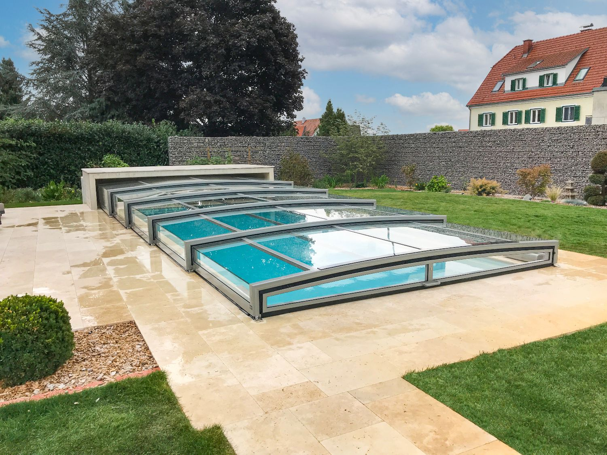
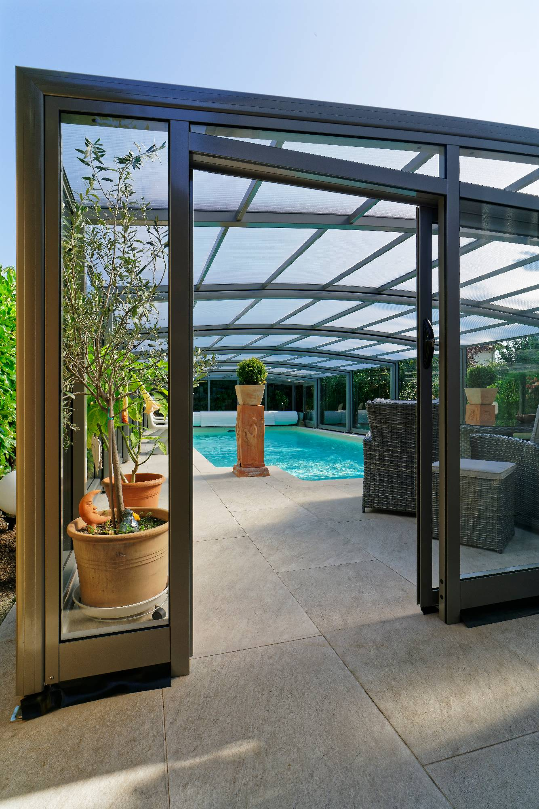
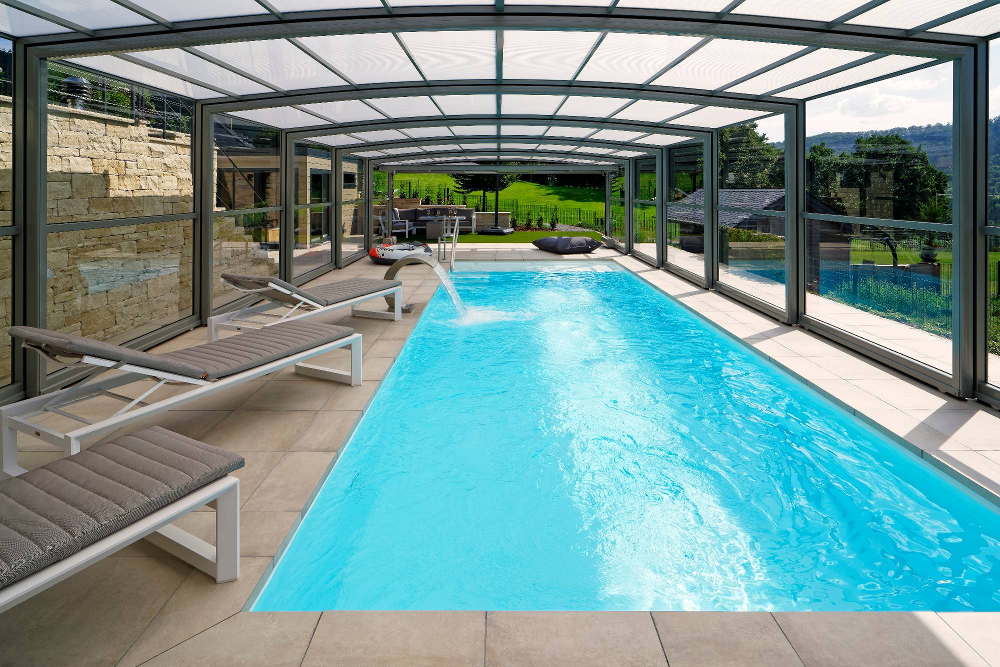

Leistungen & Modelle
Vier Bauformen. Ein Qualitätsanspruch.
Jede Paradiso-Überdachung wird individuell nach den Maßen Ihres Pools gefertigt — schienenlos, aus echtem Sicherheitsglas, wahlweise mit Solarantrieb.

Flache Poolüberdachung
Die niedrige, flache Bauform fügt sich unauffällig in jede Terrassengestaltung ein und schützt das Becken zuverlässig vor Laub, Schmutz und Auskühlung — ohne die Optik Ihres Gartens zu dominieren.
- ✓ Platzsparende, kompakte Teleskoplösung
- ✓ Ideal für Terrassen mit wenig Aufbauhöhe
- ✓ Echtes VSG-Sicherheitsglas, kratzfest & hagelsicher

Schwimmbadüberdachung
Die hohe, begehbare Bauform verwandelt Ihren Pool in einen ganzjährig nutzbaren Raum. Komfortabler Zugang rund ums Becken, Schutz bei jedem Wetter — schienenlos in wenigen Minuten geöffnet.
- ✓ Aufrecht begehbar rund um das Becken
- ✓ Teleskopierbar ohne Bodenschienen
- ✓ Optional solarbetrieben, per App oder Funk steuerbar

Poolhaus & Schwimmbadhalle
Für höchsten Wohnkomfort: eine feste, beheizbare Überdachung wie ein Wintergarten. Das Poolhaus macht Ihr Schwimmbad zum ganzjährigen Wohnraum — unabhängig von Jahreszeit und Witterung.
- ✓ Ganzjährige Nutzung wie ein Wintergarten
- ✓ Individuelle Architektur nach Maß
- ✓ Kombinierbar mit Beheizung & Belüftung
Terrassenüberdachung
Wetterschutz für den gesamten Außenbereich — gefertigt in derselben Formsprache wie Ihre Poolüberdachung, für ein stimmiges Gesamtbild von Terrasse und Pool.
- ✓ Einheitliches Design mit der Poolüberdachung
- ✓ Schutz vor Sonne, Regen und Wind
- ✓ Individuell konfigurierbar
Technik & Material
Was jede Paradiso-Überdachung auszeichnet
Vierfach-Führungssystem
Schienenlos teleskopierend, von nur einer Person zu öffnen und zu schließen — ohne Stolperkanten am Boden.
Echtes VSG-Sicherheitsglas
Kratzfest, hagelsicher, dauerhaft klar — kein Vergilben und keine Trübung wie bei Kunststoffalternativen.
Solarantrieb & App-Steuerung
Optional per Funk oder Smartphone-App bedienbar — unabhängig von einem festen Stromanschluss.
Welches Modell passt zu Ihrem Pool?
Wir beraten Sie kostenlos und unverbindlich — mit Maßaufnahme direkt bei Ihnen.
Beratungstermin anfragen